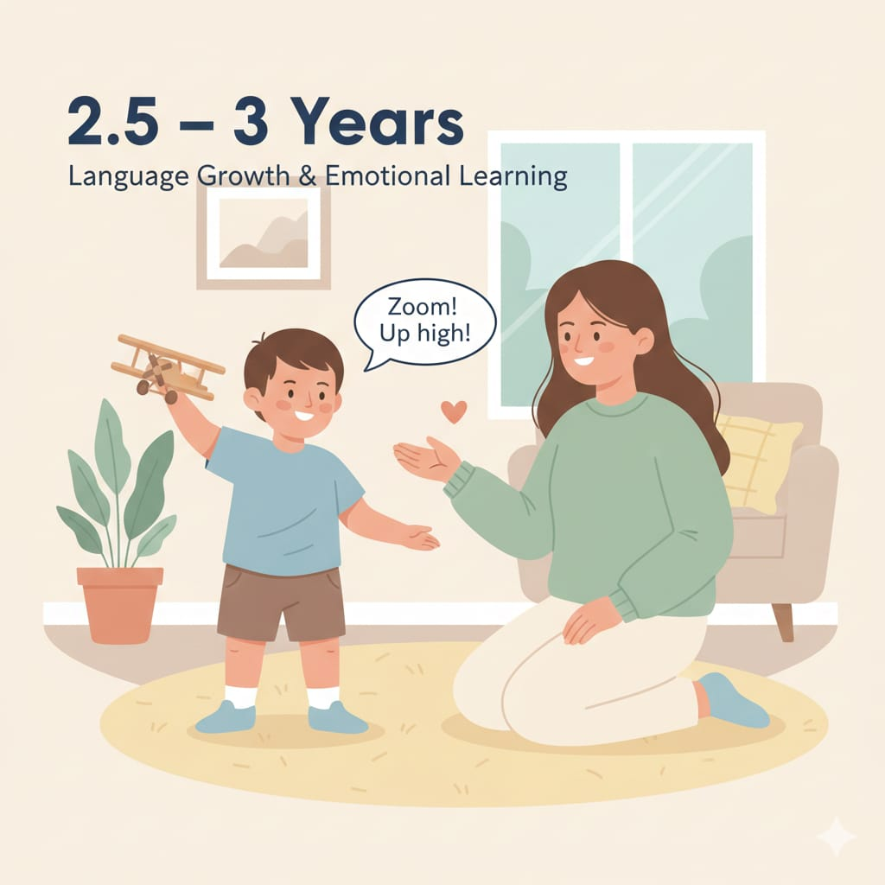

2.5 – 3 سنوات
هنا الخيال بيكبر، واللغة بتتحسن تدريجيًا، والطفل يبدأ يتعلم “الدور/المشاركة”، ومع ده تظهر مخاوف ونوبات رفض وتحدّي للحدود.

مهم: “التوقعات الواضحة + الروتين + تدريب بسيط يومي”
بيقلل أغلب مشاكل السن ده.
هنا الخيال بيكبر، واللغة بتتحسن تدريجيًا، والطفل يبدأ يتعلم “الدور/المشاركة”، ومع ده تظهر مخاوف ونوبات رفض وتحدّي للحدود.
